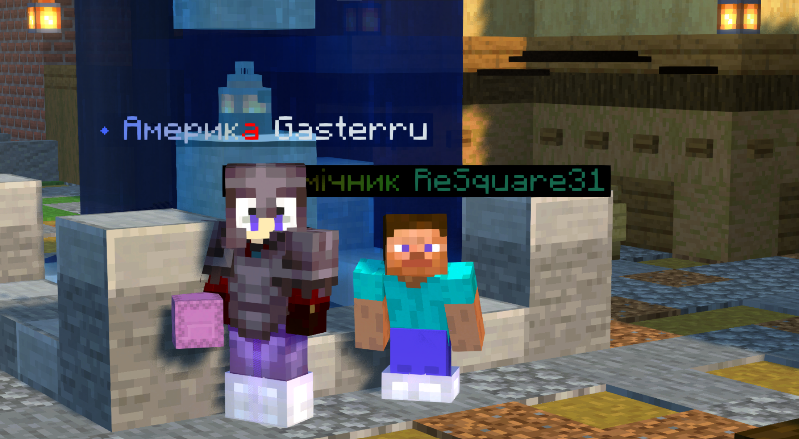
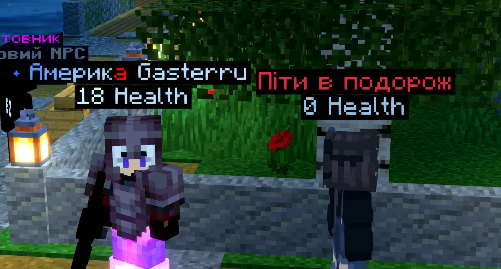
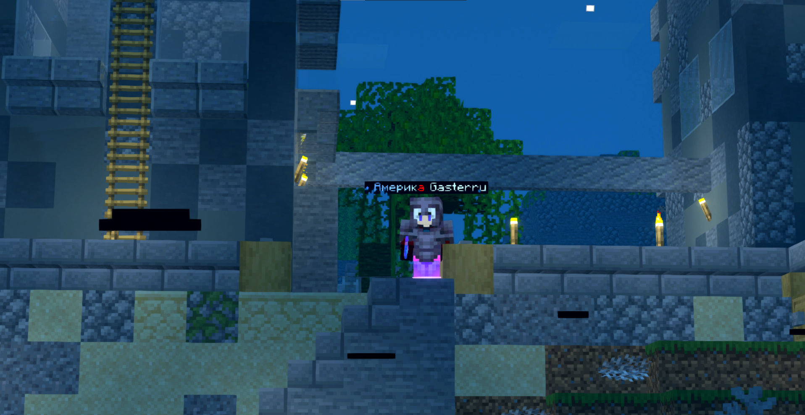
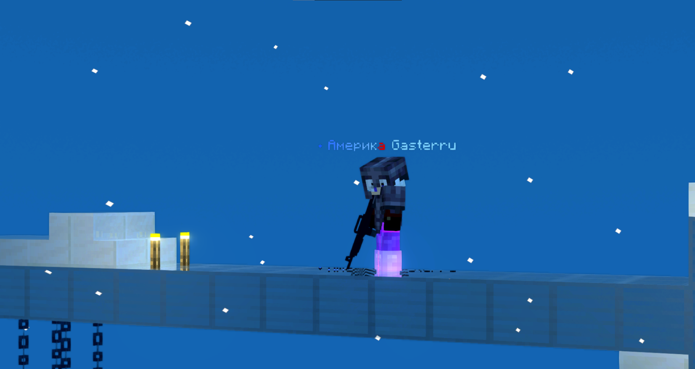

Наш сервер пропонує унікальний ігровий досвід завдяки встановленим плагінам, що розширюють можливості гравців та роблять гру цікавішою.
Якщо раптом вас, чи вашого товариша критично поранили, то він не помре, а буде дуже повільно повзти, паралельно гублячи і без того багато крові. Щоб цього не допустити, потрібно підійти до вашого товариша (прямо близько) та не відпускаючи зажати SHIFT і утримувати доти, доки він не підніметься на ноги. В пораненому стані, ви не можете використовувати команди, а ні ломати/ставити блоки.
Якщо ви грали на сервері Содкрафт, то ви пам'ятаєте, що там не було системи міст як на PersiaClub, але зараз вона координально змінилась і стала дуже великою. Для кращого ознайомлення рекомендуємо прочитати статтю тут.
Під час гри, якщо ви довго не будете спати, то будете відчувати себе втомленим і в'ялим. Тепер ви можете поспати, щоб відчути себе краще. Все, що потрібно, це щоб 2-3 гравців (в залежності від кількості онлайну) лягли спати. Нічого складного.
На сервері PersiaClub існує система національностей, де кожен гравець може обрати свою національність. Це впливає на його роль у грі, доступ до певних ресурсів та здатність взаємодіяти з іншими націями. Національність також визначає певні бонуси та особливі здібності.
